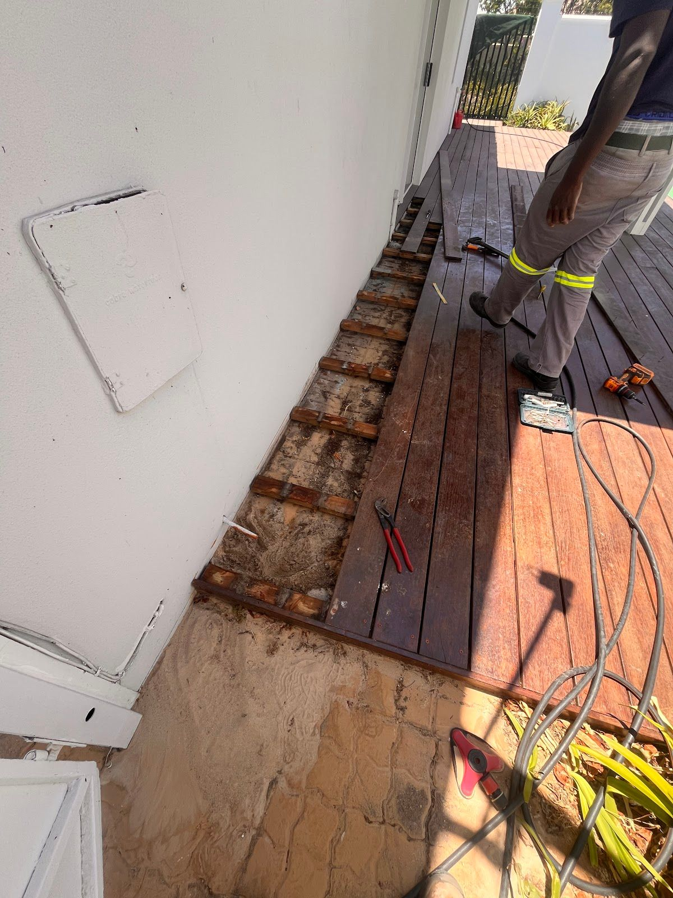
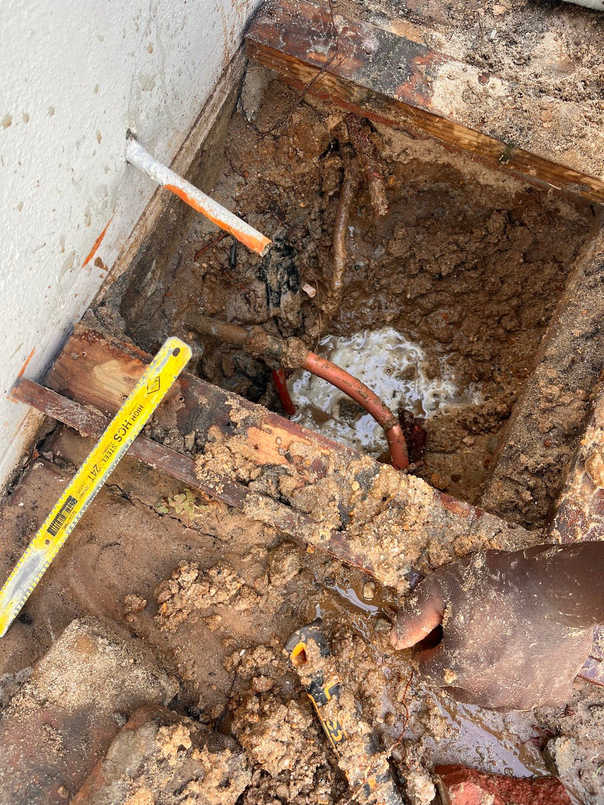
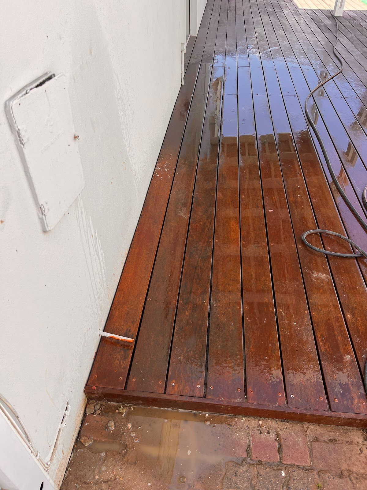
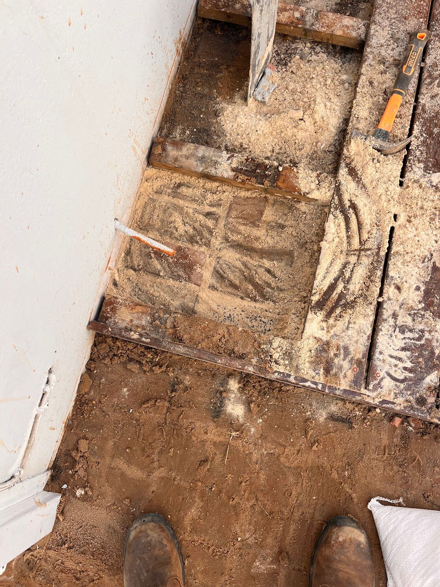

Ascot plumbing SA is your local plumbing expert in Cape Town, dedicated to solving all your plumbing issues efficiently. Our team is equipped to handle everything from minor repairs to major installations, ensuring that your home or business operates smoothly.
Founded with a commitment to quality and reliability, Ascot plumbing SA has grown to become a trusted name in the local community. We pride ourselves on our prompt service and our ability to meet the diverse plumbing needs of our clients.
At Ascot plumbing SA, we believe in delivering exceptional value to our customers. Our values are grounded in integrity, transparency, and a genuine dedication to customer satisfaction. We strive to build long-lasting relationships with our clients by consistently exceeding their expectations.
At Ascot plumbing SA, we offer a comprehensive range of plumbing services designed to keep your systems running smoothly.
We provide expert drain repair services to ensure your drainage systems are functioning at their best, preventing costly damage.
Our team is skilled at unblocking pipes, using the latest technology to clear even the toughest blockages safely and effectively.
We offer comprehensive maintenance services for your bathroom fixtures, ensuring everything is in top working condition.
Our kitchen maintenance services cover everything from leaky faucets to full-service plumbing installations.
Hear what our satisfied clients have to say about us.
"Ascot plumbing SA fixed my leaking pipes quickly and professionally. Highly recommend their services!"— John Doe, ⭐⭐⭐⭐⭐




We'd love to hear from you — reach out to us anytime.